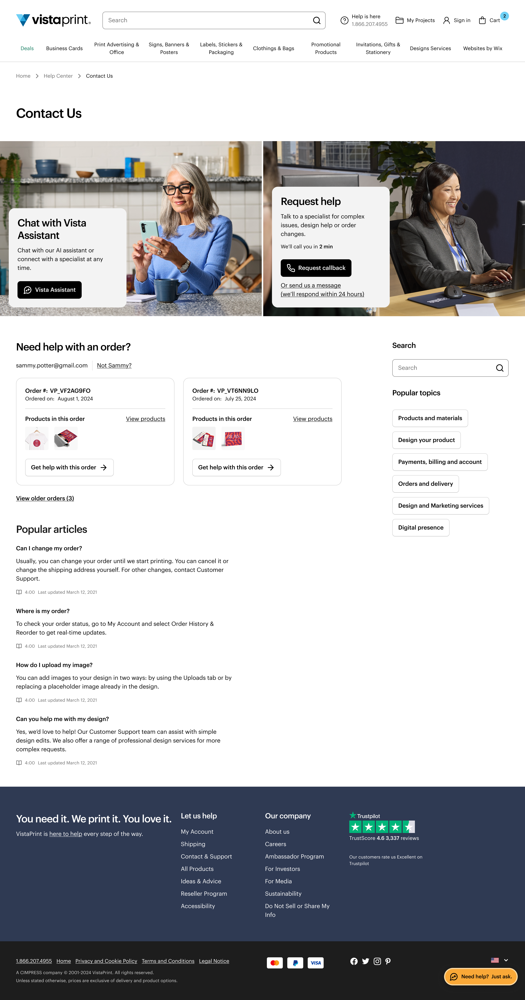
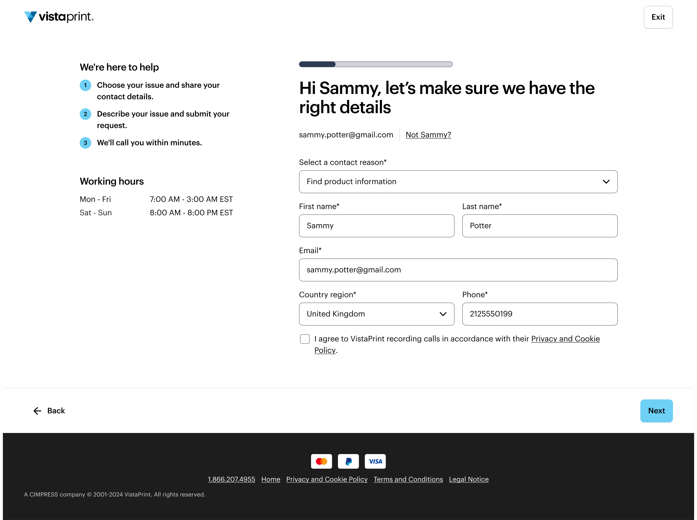
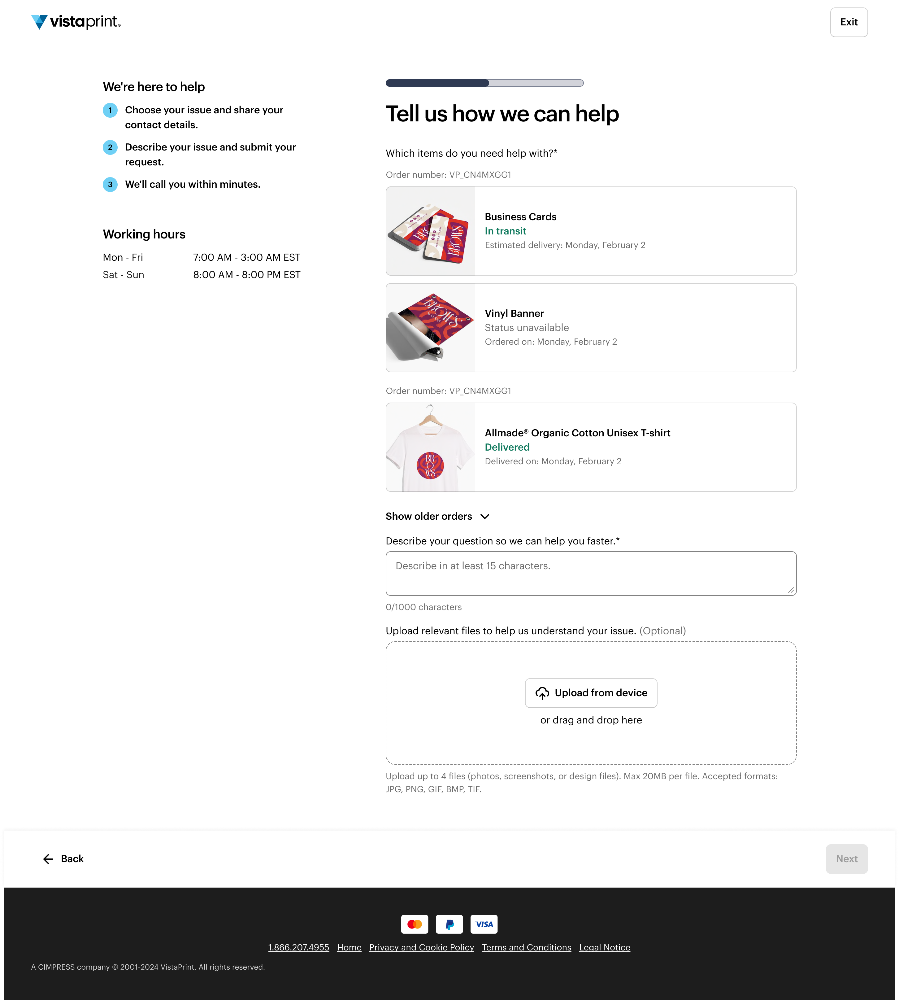
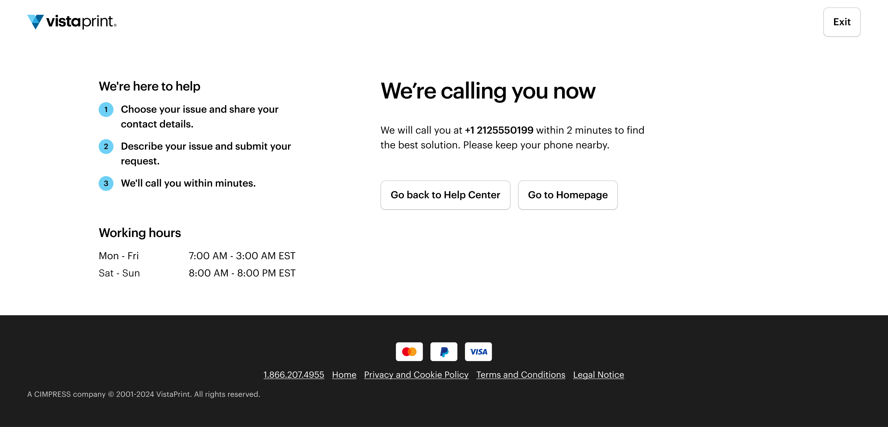

VistaPrint's Contact Us experience hadn't been meaningfully redesigned in years. Customers were defaulting to email — the slowest and lowest-value channel — not by preference, but because the interface made it the path of least resistance. Email contacts carry significantly lower VGP than callback (C2C), and email volume was overindexed relative to stated customer preference data. Leadership aligned on a seven-figure annual revenue key result tied specifically to contact channel mix improvement.
Lead end-to-end UX research and design for a full redesign of the contact channel surface. Scope: analytics review, transcript analysis of 30 support interactions, competitive benchmarking of 15 companies, structured evaluation of 4 solution directions, high-fidelity design for desktop and mobile, unmoderated usability testing with 10 participants, and a full A/B/C test specification. Target: ship as P0 in Q3 FY26.